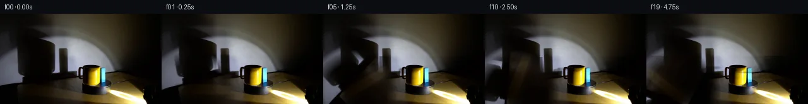

![首帧]()

Round 00
2026-11-05T18:42:30.663608+00:00像素候选变化代码 +254/−0inspection 更新
pixels 2ed23c27de0104f6 · code 428eef712fc4268e
查看本轮 generate.py 真实 diff
--- previous/generate.py
+++ current/generate.py
@@ -0,0 +1,254 @@
+"""generate.py — PixelWorld-Text: rotating platform with yellow mug and blue block under spotlight.
+
+Approach:
+ - Reverse-mapping rotation: for each output pixel in the rotating region,
+ compute the source pixel in the original frame by applying the inverse
+ rotation, then sample with bilinear interpolation (scipy.ndimage.map_coordinates).
+ - A soft circular mask blends the rotating and non-rotating regions.
+ - Shadow on the wall is modelled by extracting a darkening template from the
+ original frame and displacing it based on the objects' angular position.
+ - The wall background behind the shadow is inpainted (horizontal interpolation).
+
+All pixel operations are local NumPy/SciPy — no external rendering engines.
+"""
+
+import numpy as np
+from PIL import Image
+from pathlib import Path
+from scipy.ndimage import map_coordinates, gaussian_filter
+import artifact_io
+
+# ── Configuration ────────────────────────────────────────────────────────
+H, W = 144, 256
+N_FRAMES = 20
+FPS = 4
+
+# Platform centre and radius (measured from first_frame.png pixel analysis)
+CX = 50
+CY = 125
+PLATFORM_RADIUS = 58 # radius of the rotating region (pixels)
+BLEND_HALF = 10 # half-width of soft transition at platform edge
+
+# Rotation: clockwise, 150° over the 20 frames
+TOTAL_ROTATION_DEG = 150.0
+TOTAL_ROTATION_RAD = np.radians(TOTAL_ROTATION_DEG)
+ANGLE_PER_FRAME_RAD = TOTAL_ROTATION_RAD / (N_FRAMES - 1) # for frames 1..19
+
+# Shadow model — shadow shifts left as objects rotate clockwise
+SHADOW_BASE_X = 100.0 # shadow centre x in original frame (α=0)
+SHADOW_Y0 = 65 # shadow vertical extent on wall
+SHADOW_Y1 = 93
+SHADOW_AMP_X = 20.0 # horizontal displacement amplitude (pixels)
+SHADOW_AMP_Y = 4.0 # small vertical wobble amplitude
+SHADOW_DARKEN_FACTOR = 0.60 # how dark the shadow gets (0 = black, 1 = no change)
+
+# ── Load original frame ──────────────────────────────────────────────────
+case_dir = Path(__file__).parent
+original = np.array(Image.open(case_dir / "first_frame.png")).astype(np.float64)
+assert original.shape == (H, W, 3), f"Expected (144,256,3), got {original.shape}"
+
+# ── Precompute coordinate grids ──────────────────────────────────────────
+yg, xg = np.mgrid[0:H, 0:W].astype(np.float64)
+dx = xg - CX
+dy = yg - CY
+dist = np.sqrt(dx**2 + dy**2)
+
+# ── Create soft mask for the rotating region ─────────────────────────────
+inner_r = PLATFORM_RADIUS - BLEND_HALF
+outer_r = PLATFORM_RADIUS + BLEND_HALF
+t = np.clip((dist - inner_r) / (outer_r - inner_r), 0.0, 1.0) # 0=rotate, 1=original
+rotating_weight = 1.0 - t # 1.0 fully inside platform, 0.0 outside
+original_weight = t # 1.0 outside platform, 0.0 inside
+
+# ── Precompute original frame channels for interpolation ─────────────────
+orig_t = original.transpose(2, 0, 1) # shape (3, 144, 256)
+
+# ── Wall background (without shadow) via horizontal inpainting ──────────
+# For each row in the shadow region, interpolate across the shadow gap
+wall_clean = original.copy()
+for y in range(SHADOW_Y0, SHADOW_Y1):
+ row_avg = original[y, :, :].mean(axis=1) # brightness per column
+ # Identify the shadow region as pixels significantly darker than neighbors
+ shadow_x0 = max(0, int(SHADOW_BASE_X - SHADOW_AMP_X - 15))
+ shadow_x1 = min(W, int(SHADOW_BASE_X + SHADOW_AMP_X + 15))
+ # Build interpolated values across the shadow gap
+ for c in range(3):
+ x_vals = []
+ y_vals = []
+ for x in range(shadow_x0, shadow_x1):
+ r = original[y, x, c]
+ # Determine if this pixel is in the shadow (dark compared to wide context)
+ local_avg = original[y, max(0,x-20):min(W,x+20), c].mean()
+ if r < local_avg * 0.85: # significantly darker → shadow pixel
+ pass # skip shadow pixel
+ else:
+ x_vals.append(x)
+ y_vals.append(r)
+ if len(x_vals) >= 2:
… diff truncated; 167 more lines …